Interactions and ANOVA#
Note: This script is based heavily on Jonathan Taylor’s class notes https://web.stanford.edu/class/stats191/notebooks/Interactions.html
Download and format data:
[1]:
%matplotlib inline
[2]:
import os
import shutil
import numpy as np
import requests
np.set_printoptions(precision=4, suppress=True)
import pandas as pd
pd.set_option("display.width", 100)
import matplotlib.pyplot as plt
from statsmodels.formula.api import ols
from statsmodels.graphics.api import abline_plot, interaction_plot
from statsmodels.stats.anova import anova_lm
def download_file(url, mode="t"):
local_filename = url.split("/")[-1]
if os.path.exists(local_filename):
return local_filename
with requests.get(url, stream=True) as r:
with open(local_filename, f"w{mode}") as f:
f.write(r.text)
return local_filename
url = "https://raw.githubusercontent.com/statsmodels/smdatasets/main/data/anova/salary/salary.table"
salary_table = pd.read_csv(download_file(url), sep="\t")
E = salary_table.E
M = salary_table.M
X = salary_table.X
S = salary_table.S
Take a look at the data:
[3]:
plt.figure(figsize=(6, 6))
symbols = ["D", "^"]
colors = ["r", "g", "blue"]
factor_groups = salary_table.groupby(["E", "M"])
for values, group in factor_groups:
i, j = values
plt.scatter(group["X"], group["S"], marker=symbols[j], color=colors[i - 1], s=144)
plt.xlabel("Experience")
plt.ylabel("Salary")
[3]:
Text(0, 0.5, 'Salary')
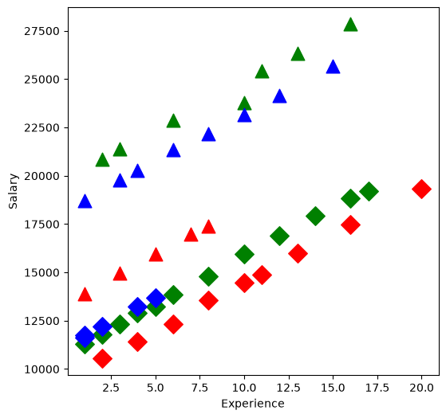
Fit a linear model:
[4]:
formula = "S ~ C(E) + C(M) + X"
lm = ols(formula, salary_table).fit()
print(lm.summary())
OLS Regression Results
==============================================================================
Dep. Variable: S R-squared: 0.957
Model: OLS Adj. R-squared: 0.953
Method: Least Squares F-statistic: 226.8
Date: Tue, 30 Jun 2026 Prob (F-statistic): 2.23e-27
Time: 15:41:35 Log-Likelihood: -381.63
No. Observations: 46 AIC: 773.3
Df Residuals: 41 BIC: 782.4
Df Model: 4
Covariance Type: nonrobust
==============================================================================
coef std err t P>|t| [0.025 0.975]
------------------------------------------------------------------------------
Intercept 8035.5976 386.689 20.781 0.000 7254.663 8816.532
C(E)[T.2] 3144.0352 361.968 8.686 0.000 2413.025 3875.045
C(E)[T.3] 2996.2103 411.753 7.277 0.000 2164.659 3827.762
C(M)[T.1] 6883.5310 313.919 21.928 0.000 6249.559 7517.503
X 546.1840 30.519 17.896 0.000 484.549 607.819
==============================================================================
Omnibus: 2.293 Durbin-Watson: 2.237
Prob(Omnibus): 0.318 Jarque-Bera (JB): 1.362
Skew: -0.077 Prob(JB): 0.506
Kurtosis: 2.171 Cond. No. 33.5
==============================================================================
Notes:
[1] Standard Errors assume that the covariance matrix of the errors is correctly specified.
Have a look at the created design matrix:
[5]:
lm.model.exog[:5]
[5]:
array([[1., 0., 0., 1., 1.],
[1., 0., 1., 0., 1.],
[1., 0., 1., 1., 1.],
[1., 1., 0., 0., 1.],
[1., 0., 1., 0., 1.]])
Or since we initially passed in a DataFrame, we have a DataFrame available in
[6]:
lm.model.data.orig_exog[:5]
[6]:
| Intercept | C(E)[T.2] | C(E)[T.3] | C(M)[T.1] | X | |
|---|---|---|---|---|---|
| 0 | 1.0 | 0.0 | 0.0 | 1.0 | 1.0 |
| 1 | 1.0 | 0.0 | 1.0 | 0.0 | 1.0 |
| 2 | 1.0 | 0.0 | 1.0 | 1.0 | 1.0 |
| 3 | 1.0 | 1.0 | 0.0 | 0.0 | 1.0 |
| 4 | 1.0 | 0.0 | 1.0 | 0.0 | 1.0 |
We keep a reference to the original untouched data in
[7]:
lm.model.data.frame[:5]
[7]:
| S | X | E | M | |
|---|---|---|---|---|
| 0 | 13876 | 1 | 1 | 1 |
| 1 | 11608 | 1 | 3 | 0 |
| 2 | 18701 | 1 | 3 | 1 |
| 3 | 11283 | 1 | 2 | 0 |
| 4 | 11767 | 1 | 3 | 0 |
Influence statistics
[8]:
infl = lm.get_influence()
print(infl.summary_table())
==================================================================================================
obs endog fitted Cook's student. hat diag dffits ext.stud. dffits
value d residual internal residual
--------------------------------------------------------------------------------------------------
0 13876.000 15465.313 0.104 -1.683 0.155 -0.722 -1.723 -0.739
1 11608.000 11577.992 0.000 0.031 0.130 0.012 0.031 0.012
2 18701.000 18461.523 0.001 0.247 0.109 0.086 0.244 0.085
3 11283.000 11725.817 0.005 -0.458 0.113 -0.163 -0.453 -0.162
4 11767.000 11577.992 0.001 0.197 0.130 0.076 0.195 0.075
5 20872.000 19155.532 0.092 1.787 0.126 0.678 1.838 0.698
6 11772.000 12272.001 0.006 -0.513 0.101 -0.172 -0.509 -0.170
7 10535.000 9127.966 0.056 1.457 0.116 0.529 1.478 0.537
8 12195.000 12124.176 0.000 0.074 0.123 0.028 0.073 0.027
9 12313.000 12818.185 0.005 -0.516 0.091 -0.163 -0.511 -0.161
10 14975.000 16557.681 0.084 -1.655 0.134 -0.650 -1.692 -0.664
11 21371.000 19701.716 0.078 1.728 0.116 0.624 1.772 0.640
12 19800.000 19553.891 0.001 0.252 0.096 0.082 0.249 0.081
13 11417.000 10220.334 0.033 1.227 0.098 0.405 1.234 0.408
14 20263.000 20100.075 0.001 0.166 0.093 0.053 0.165 0.053
15 13231.000 13216.544 0.000 0.015 0.114 0.005 0.015 0.005
16 12884.000 13364.369 0.004 -0.488 0.082 -0.146 -0.483 -0.145
17 13245.000 13910.553 0.007 -0.674 0.075 -0.192 -0.669 -0.191
18 13677.000 13762.728 0.000 -0.089 0.113 -0.032 -0.087 -0.031
19 15965.000 17650.049 0.082 -1.747 0.119 -0.642 -1.794 -0.659
20 12336.000 11312.702 0.021 1.043 0.087 0.323 1.044 0.323
21 21352.000 21192.443 0.001 0.163 0.091 0.052 0.161 0.051
22 13839.000 14456.737 0.006 -0.624 0.070 -0.171 -0.619 -0.170
23 22884.000 21340.268 0.052 1.579 0.095 0.511 1.610 0.521
24 16978.000 18742.417 0.083 -1.822 0.111 -0.644 -1.877 -0.664
25 14803.000 15549.105 0.008 -0.751 0.065 -0.199 -0.747 -0.198
26 17404.000 19288.601 0.093 -1.944 0.110 -0.684 -2.016 -0.709
27 22184.000 22284.811 0.000 -0.103 0.096 -0.034 -0.102 -0.033
28 13548.000 12405.070 0.025 1.162 0.083 0.350 1.167 0.352
29 14467.000 13497.438 0.018 0.987 0.086 0.304 0.987 0.304
30 15942.000 16641.473 0.007 -0.705 0.068 -0.190 -0.701 -0.189
31 23174.000 23377.179 0.001 -0.209 0.108 -0.073 -0.207 -0.072
32 23780.000 23525.004 0.001 0.260 0.092 0.083 0.257 0.082
33 25410.000 24071.188 0.040 1.370 0.096 0.446 1.386 0.451
34 14861.000 14043.622 0.014 0.834 0.091 0.263 0.831 0.262
35 16882.000 17733.841 0.012 -0.863 0.077 -0.249 -0.860 -0.249
36 24170.000 24469.547 0.003 -0.312 0.127 -0.119 -0.309 -0.118
37 15990.000 15135.990 0.018 0.878 0.104 0.300 0.876 0.299
38 26330.000 25163.556 0.035 1.202 0.109 0.420 1.209 0.422
39 17949.000 18826.209 0.017 -0.897 0.093 -0.288 -0.895 -0.287
40 25685.000 26108.099 0.008 -0.452 0.169 -0.204 -0.447 -0.202
41 27837.000 26802.108 0.039 1.087 0.141 0.440 1.089 0.441
42 18838.000 19918.577 0.033 -1.119 0.117 -0.407 -1.123 -0.408
43 17483.000 16774.542 0.018 0.743 0.138 0.297 0.739 0.295
44 19207.000 20464.761 0.052 -1.313 0.131 -0.511 -1.325 -0.515
45 19346.000 18959.278 0.009 0.423 0.208 0.216 0.419 0.214
==================================================================================================
or get a dataframe
[9]:
df_infl = infl.summary_frame()
[10]:
df_infl[:5]
[10]:
| dfb_Intercept | dfb_C(E)[T.2] | dfb_C(E)[T.3] | dfb_C(M)[T.1] | dfb_X | cooks_d | standard_resid | hat_diag | dffits_internal | student_resid | dffits | |
|---|---|---|---|---|---|---|---|---|---|---|---|
| 0 | -0.505123 | 0.376134 | 0.483977 | -0.369677 | 0.399111 | 0.104186 | -1.683099 | 0.155327 | -0.721753 | -1.723037 | -0.738880 |
| 1 | 0.004663 | 0.000145 | 0.006733 | -0.006220 | -0.004449 | 0.000029 | 0.031318 | 0.130266 | 0.012120 | 0.030934 | 0.011972 |
| 2 | 0.013627 | 0.000367 | 0.036876 | 0.030514 | -0.034970 | 0.001492 | 0.246931 | 0.109021 | 0.086377 | 0.244082 | 0.085380 |
| 3 | -0.083152 | -0.074411 | 0.009704 | 0.053783 | 0.105122 | 0.005338 | -0.457630 | 0.113030 | -0.163364 | -0.453173 | -0.161773 |
| 4 | 0.029382 | 0.000917 | 0.042425 | -0.039198 | -0.028036 | 0.001166 | 0.197257 | 0.130266 | 0.076340 | 0.194929 | 0.075439 |
Now plot the residuals within the groups separately:
[11]:
resid = lm.resid
plt.figure(figsize=(6, 6))
for values, group in factor_groups:
i, j = values
group_num = i * 2 + j - 1 # for plotting purposes
x = [group_num] * len(group)
plt.scatter(
x,
resid[group.index],
marker=symbols[j],
color=colors[i - 1],
s=144,
edgecolors="black",
)
plt.xlabel("Group")
plt.ylabel("Residuals")
[11]:
Text(0, 0.5, 'Residuals')
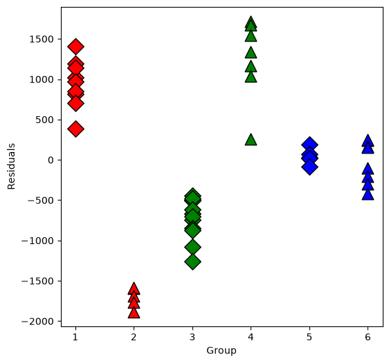
Now we will test some interactions using anova or f_test
[12]:
interX_lm = ols("S ~ C(E) * X + C(M)", salary_table).fit()
print(interX_lm.summary())
OLS Regression Results
==============================================================================
Dep. Variable: S R-squared: 0.961
Model: OLS Adj. R-squared: 0.955
Method: Least Squares F-statistic: 158.6
Date: Tue, 30 Jun 2026 Prob (F-statistic): 8.23e-26
Time: 15:41:36 Log-Likelihood: -379.47
No. Observations: 46 AIC: 772.9
Df Residuals: 39 BIC: 785.7
Df Model: 6
Covariance Type: nonrobust
===============================================================================
coef std err t P>|t| [0.025 0.975]
-------------------------------------------------------------------------------
Intercept 7256.2800 549.494 13.205 0.000 6144.824 8367.736
C(E)[T.2] 4172.5045 674.966 6.182 0.000 2807.256 5537.753
C(E)[T.3] 3946.3649 686.693 5.747 0.000 2557.396 5335.333
C(M)[T.1] 7102.4539 333.442 21.300 0.000 6428.005 7776.903
X 632.2878 53.185 11.888 0.000 524.710 739.865
C(E)[T.2]:X -125.5147 69.863 -1.797 0.080 -266.826 15.796
C(E)[T.3]:X -141.2741 89.281 -1.582 0.122 -321.861 39.313
==============================================================================
Omnibus: 0.432 Durbin-Watson: 2.179
Prob(Omnibus): 0.806 Jarque-Bera (JB): 0.590
Skew: 0.144 Prob(JB): 0.744
Kurtosis: 2.526 Cond. No. 69.7
==============================================================================
Notes:
[1] Standard Errors assume that the covariance matrix of the errors is correctly specified.
Do an ANOVA check
[13]:
from statsmodels.stats.api import anova_lm
table1 = anova_lm(lm, interX_lm)
print(table1)
interM_lm = ols("S ~ X + C(E)*C(M)", data=salary_table).fit()
print(interM_lm.summary())
table2 = anova_lm(lm, interM_lm)
print(table2)
df_resid ssr df_diff ss_diff F Pr(>F)
0 41.0 4.328072e+07 0.0 NaN NaN NaN
1 39.0 3.941068e+07 2.0 3.870040e+06 1.914856 0.160964
OLS Regression Results
==============================================================================
Dep. Variable: S R-squared: 0.999
Model: OLS Adj. R-squared: 0.999
Method: Least Squares F-statistic: 5517.
Date: Tue, 30 Jun 2026 Prob (F-statistic): 1.67e-55
Time: 15:41:36 Log-Likelihood: -298.74
No. Observations: 46 AIC: 611.5
Df Residuals: 39 BIC: 624.3
Df Model: 6
Covariance Type: nonrobust
=======================================================================================
coef std err t P>|t| [0.025 0.975]
---------------------------------------------------------------------------------------
Intercept 9472.6854 80.344 117.902 0.000 9310.175 9635.196
C(E)[T.2] 1381.6706 77.319 17.870 0.000 1225.279 1538.063
C(E)[T.3] 1730.7483 105.334 16.431 0.000 1517.690 1943.806
C(M)[T.1] 3981.3769 101.175 39.351 0.000 3776.732 4186.022
C(E)[T.2]:C(M)[T.1] 4902.5231 131.359 37.322 0.000 4636.825 5168.222
C(E)[T.3]:C(M)[T.1] 3066.0351 149.330 20.532 0.000 2763.986 3368.084
X 496.9870 5.566 89.283 0.000 485.728 508.246
==============================================================================
Omnibus: 74.761 Durbin-Watson: 2.244
Prob(Omnibus): 0.000 Jarque-Bera (JB): 1037.873
Skew: -4.103 Prob(JB): 4.25e-226
Kurtosis: 24.776 Cond. No. 79.0
==============================================================================
Notes:
[1] Standard Errors assume that the covariance matrix of the errors is correctly specified.
df_resid ssr df_diff ss_diff F Pr(>F)
0 41.0 4.328072e+07 0.0 NaN NaN NaN
1 39.0 1.178168e+06 2.0 4.210255e+07 696.844466 3.025504e-31
The design matrix as a DataFrame
[14]:
interM_lm.model.data.orig_exog[:5]
[14]:
| Intercept | C(E)[T.2] | C(E)[T.3] | C(M)[T.1] | C(E)[T.2]:C(M)[T.1] | C(E)[T.3]:C(M)[T.1] | X | |
|---|---|---|---|---|---|---|---|
| 0 | 1.0 | 0.0 | 0.0 | 1.0 | 0.0 | 0.0 | 1.0 |
| 1 | 1.0 | 0.0 | 1.0 | 0.0 | 0.0 | 0.0 | 1.0 |
| 2 | 1.0 | 0.0 | 1.0 | 1.0 | 0.0 | 1.0 | 1.0 |
| 3 | 1.0 | 1.0 | 0.0 | 0.0 | 0.0 | 0.0 | 1.0 |
| 4 | 1.0 | 0.0 | 1.0 | 0.0 | 0.0 | 0.0 | 1.0 |
The design matrix as an ndarray
[15]:
interM_lm.model.exog
interM_lm.model.exog_names
[15]:
['Intercept',
'C(E)[T.2]',
'C(E)[T.3]',
'C(M)[T.1]',
'C(E)[T.2]:C(M)[T.1]',
'C(E)[T.3]:C(M)[T.1]',
'X']
[16]:
infl = interM_lm.get_influence()
resid = infl.resid_studentized_internal
plt.figure(figsize=(6, 6))
for values, group in factor_groups:
i, j = values
idx = group.index
plt.scatter(
X[idx],
resid[idx],
marker=symbols[j],
color=colors[i - 1],
s=144,
edgecolors="black",
)
plt.xlabel("X")
plt.ylabel("standardized resids")
[16]:
Text(0, 0.5, 'standardized resids')
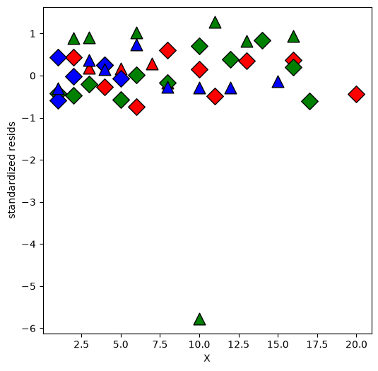
Looks like one observation is an outlier.
[17]:
drop_idx = abs(resid).argmax()
print(drop_idx) # zero-based index
idx = salary_table.index.drop(drop_idx)
lm32 = ols("S ~ C(E) + X + C(M)", data=salary_table, subset=idx).fit()
print(lm32.summary())
print("\n")
interX_lm32 = ols("S ~ C(E) * X + C(M)", data=salary_table, subset=idx).fit()
print(interX_lm32.summary())
print("\n")
table3 = anova_lm(lm32, interX_lm32)
print(table3)
print("\n")
interM_lm32 = ols("S ~ X + C(E) * C(M)", data=salary_table, subset=idx).fit()
table4 = anova_lm(lm32, interM_lm32)
print(table4)
print("\n")
32
OLS Regression Results
==============================================================================
Dep. Variable: S R-squared: 0.955
Model: OLS Adj. R-squared: 0.950
Method: Least Squares F-statistic: 211.7
Date: Tue, 30 Jun 2026 Prob (F-statistic): 2.45e-26
Time: 15:41:36 Log-Likelihood: -373.79
No. Observations: 45 AIC: 757.6
Df Residuals: 40 BIC: 766.6
Df Model: 4
Covariance Type: nonrobust
==============================================================================
coef std err t P>|t| [0.025 0.975]
------------------------------------------------------------------------------
Intercept 8044.7518 392.781 20.482 0.000 7250.911 8838.592
C(E)[T.2] 3129.5286 370.470 8.447 0.000 2380.780 3878.277
C(E)[T.3] 2999.4451 416.712 7.198 0.000 2157.238 3841.652
C(M)[T.1] 6866.9856 323.991 21.195 0.000 6212.175 7521.796
X 545.7855 30.912 17.656 0.000 483.311 608.260
==============================================================================
Omnibus: 2.511 Durbin-Watson: 2.265
Prob(Omnibus): 0.285 Jarque-Bera (JB): 1.400
Skew: -0.044 Prob(JB): 0.496
Kurtosis: 2.140 Cond. No. 33.1
==============================================================================
Notes:
[1] Standard Errors assume that the covariance matrix of the errors is correctly specified.
OLS Regression Results
==============================================================================
Dep. Variable: S R-squared: 0.959
Model: OLS Adj. R-squared: 0.952
Method: Least Squares F-statistic: 147.7
Date: Tue, 30 Jun 2026 Prob (F-statistic): 8.97e-25
Time: 15:41:36 Log-Likelihood: -371.70
No. Observations: 45 AIC: 757.4
Df Residuals: 38 BIC: 770.0
Df Model: 6
Covariance Type: nonrobust
===============================================================================
coef std err t P>|t| [0.025 0.975]
-------------------------------------------------------------------------------
Intercept 7266.0887 558.872 13.001 0.000 6134.711 8397.466
C(E)[T.2] 4162.0846 685.728 6.070 0.000 2773.900 5550.269
C(E)[T.3] 3940.4359 696.067 5.661 0.000 2531.322 5349.549
C(M)[T.1] 7088.6387 345.587 20.512 0.000 6389.035 7788.243
X 631.6892 53.950 11.709 0.000 522.473 740.905
C(E)[T.2]:X -125.5009 70.744 -1.774 0.084 -268.714 17.712
C(E)[T.3]:X -139.8410 90.728 -1.541 0.132 -323.511 43.829
==============================================================================
Omnibus: 0.617 Durbin-Watson: 2.194
Prob(Omnibus): 0.734 Jarque-Bera (JB): 0.728
Skew: 0.162 Prob(JB): 0.695
Kurtosis: 2.468 Cond. No. 68.7
==============================================================================
Notes:
[1] Standard Errors assume that the covariance matrix of the errors is correctly specified.
df_resid ssr df_diff ss_diff F Pr(>F)
0 40.0 4.320910e+07 0.0 NaN NaN NaN
1 38.0 3.937424e+07 2.0 3.834859e+06 1.850508 0.171042
df_resid ssr df_diff ss_diff F Pr(>F)
0 40.0 4.320910e+07 0.0 NaN NaN NaN
1 38.0 1.711881e+05 2.0 4.303791e+07 4776.734853 2.291239e-46
Replot the residuals
[18]:
resid = interM_lm32.get_influence().summary_frame()["standard_resid"]
plt.figure(figsize=(6, 6))
resid = resid.reindex(X.index)
for values, group in factor_groups:
i, j = values
idx = group.index
plt.scatter(
X.loc[idx],
resid.loc[idx],
marker=symbols[j],
color=colors[i - 1],
s=144,
edgecolors="black",
)
plt.xlabel("X[~[32]]")
plt.ylabel("standardized resids")
[18]:
Text(0, 0.5, 'standardized resids')
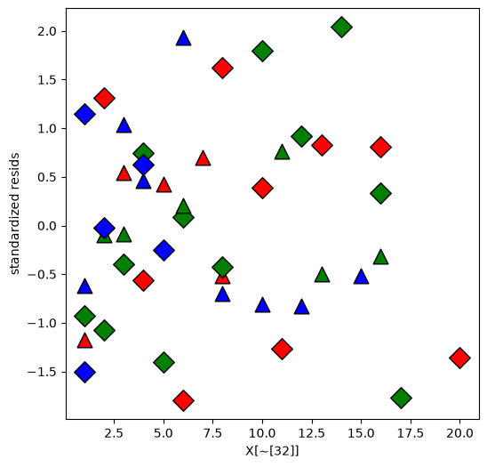
Plot the fitted values
[19]:
lm_final = ols("S ~ X + C(E)*C(M)", data=salary_table.drop([drop_idx])).fit()
mf = lm_final.model.data.orig_exog
lstyle = ["-", "--"]
plt.figure(figsize=(6, 6))
for values, group in factor_groups:
i, j = values
idx = group.index
plt.scatter(
X[idx],
S[idx],
marker=symbols[j],
color=colors[i - 1],
s=144,
edgecolors="black",
)
# drop NA because there is no idx 32 in the final model
fv = lm_final.fittedvalues.reindex(idx).dropna()
x = mf.X.reindex(idx).dropna()
plt.plot(x, fv, ls=lstyle[j], color=colors[i - 1])
plt.xlabel("Experience")
plt.ylabel("Salary")
[19]:
Text(0, 0.5, 'Salary')
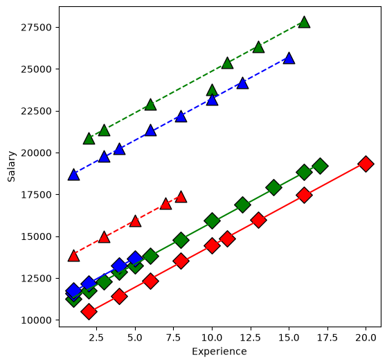
From our first look at the data, the difference between Master’s and PhD in the management group is different than in the non-management group. This is an interaction between the two qualitative variables management,M and education,E. We can visualize this by first removing the effect of experience, then plotting the means within each of the 6 groups using interaction.plot.
[20]:
U = S - X * interX_lm32.params["X"]
plt.figure(figsize=(6, 6))
interaction_plot(
E, M, U, colors=["red", "blue"], markers=["^", "D"], markersize=10, ax=plt.gca()
)
[20]:
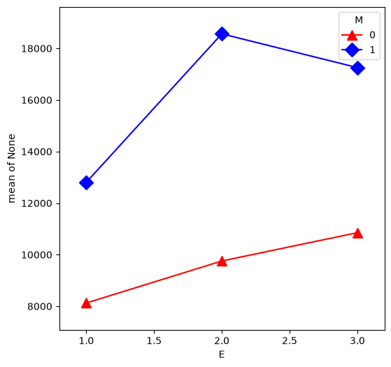

Ethnic Employment Data#
[21]:
url = "https://raw.githubusercontent.com/statsmodels/smdatasets/main/data/anova/jobtest/jobtest.table"
jobtest_table = pd.read_csv(download_file(url), sep="\t")
factor_group = jobtest_table.groupby(["ETHN"])
fig, ax = plt.subplots(figsize=(6, 6))
colors = ["purple", "green"]
markers = ["o", "v"]
for factor, group in factor_group:
factor_id = np.squeeze(factor)
ax.scatter(
group["TEST"],
group["JPERF"],
color=colors[factor_id],
marker=markers[factor_id],
s=12**2,
)
ax.set_xlabel("TEST")
ax.set_ylabel("JPERF")
[21]:
Text(0, 0.5, 'JPERF')
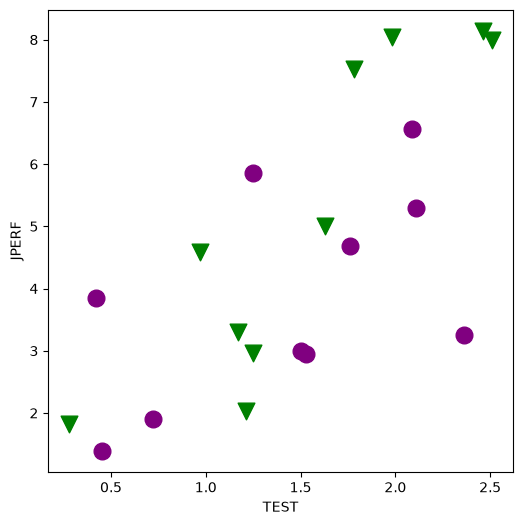
[22]:
min_lm = ols("JPERF ~ TEST", data=jobtest_table).fit()
print(min_lm.summary())
OLS Regression Results
==============================================================================
Dep. Variable: JPERF R-squared: 0.517
Model: OLS Adj. R-squared: 0.490
Method: Least Squares F-statistic: 19.25
Date: Tue, 30 Jun 2026 Prob (F-statistic): 0.000356
Time: 15:41:39 Log-Likelihood: -36.614
No. Observations: 20 AIC: 77.23
Df Residuals: 18 BIC: 79.22
Df Model: 1
Covariance Type: nonrobust
==============================================================================
coef std err t P>|t| [0.025 0.975]
------------------------------------------------------------------------------
Intercept 1.0350 0.868 1.192 0.249 -0.789 2.859
TEST 2.3605 0.538 4.387 0.000 1.230 3.491
==============================================================================
Omnibus: 0.324 Durbin-Watson: 2.896
Prob(Omnibus): 0.850 Jarque-Bera (JB): 0.483
Skew: -0.186 Prob(JB): 0.785
Kurtosis: 2.336 Cond. No. 5.26
==============================================================================
Notes:
[1] Standard Errors assume that the covariance matrix of the errors is correctly specified.
[23]:
fig, ax = plt.subplots(figsize=(6, 6))
for factor, group in factor_group:
factor_id = np.squeeze(factor)
ax.scatter(
group["TEST"],
group["JPERF"],
color=colors[factor_id],
marker=markers[factor_id],
s=12**2,
)
ax.set_xlabel("TEST")
ax.set_ylabel("JPERF")
fig = abline_plot(model_results=min_lm, ax=ax)
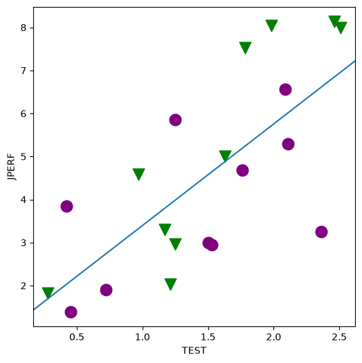
[24]:
min_lm2 = ols("JPERF ~ TEST + TEST:ETHN", data=jobtest_table).fit()
print(min_lm2.summary())
OLS Regression Results
==============================================================================
Dep. Variable: JPERF R-squared: 0.632
Model: OLS Adj. R-squared: 0.589
Method: Least Squares F-statistic: 14.59
Date: Tue, 30 Jun 2026 Prob (F-statistic): 0.000204
Time: 15:41:39 Log-Likelihood: -33.891
No. Observations: 20 AIC: 73.78
Df Residuals: 17 BIC: 76.77
Df Model: 2
Covariance Type: nonrobust
==============================================================================
coef std err t P>|t| [0.025 0.975]
------------------------------------------------------------------------------
Intercept 1.1211 0.780 1.437 0.169 -0.525 2.768
TEST 1.8276 0.536 3.412 0.003 0.698 2.958
TEST:ETHN 0.9161 0.397 2.306 0.034 0.078 1.754
==============================================================================
Omnibus: 0.388 Durbin-Watson: 3.008
Prob(Omnibus): 0.823 Jarque-Bera (JB): 0.514
Skew: 0.050 Prob(JB): 0.773
Kurtosis: 2.221 Cond. No. 5.96
==============================================================================
Notes:
[1] Standard Errors assume that the covariance matrix of the errors is correctly specified.
[25]:
fig, ax = plt.subplots(figsize=(6, 6))
for factor, group in factor_group:
factor_id = np.squeeze(factor)
ax.scatter(
group["TEST"],
group["JPERF"],
color=colors[factor_id],
marker=markers[factor_id],
s=12**2,
)
fig = abline_plot(
intercept=min_lm2.params["Intercept"],
slope=min_lm2.params["TEST"],
ax=ax,
color="purple",
)
fig = abline_plot(
intercept=min_lm2.params["Intercept"],
slope=min_lm2.params["TEST"] + min_lm2.params["TEST:ETHN"],
ax=ax,
color="green",
)
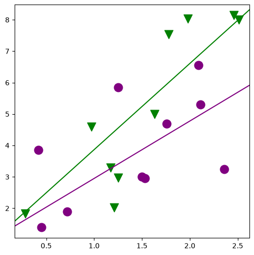
[26]:
min_lm3 = ols("JPERF ~ TEST + ETHN", data=jobtest_table).fit()
print(min_lm3.summary())
OLS Regression Results
==============================================================================
Dep. Variable: JPERF R-squared: 0.572
Model: OLS Adj. R-squared: 0.522
Method: Least Squares F-statistic: 11.38
Date: Tue, 30 Jun 2026 Prob (F-statistic): 0.000731
Time: 15:41:39 Log-Likelihood: -35.390
No. Observations: 20 AIC: 76.78
Df Residuals: 17 BIC: 79.77
Df Model: 2
Covariance Type: nonrobust
==============================================================================
coef std err t P>|t| [0.025 0.975]
------------------------------------------------------------------------------
Intercept 0.6120 0.887 0.690 0.500 -1.260 2.483
TEST 2.2988 0.522 4.400 0.000 1.197 3.401
ETHN 1.0276 0.691 1.487 0.155 -0.430 2.485
==============================================================================
Omnibus: 0.251 Durbin-Watson: 3.028
Prob(Omnibus): 0.882 Jarque-Bera (JB): 0.437
Skew: -0.059 Prob(JB): 0.804
Kurtosis: 2.286 Cond. No. 5.72
==============================================================================
Notes:
[1] Standard Errors assume that the covariance matrix of the errors is correctly specified.
[27]:
fig, ax = plt.subplots(figsize=(6, 6))
for factor, group in factor_group:
factor_id = np.squeeze(factor)
ax.scatter(
group["TEST"],
group["JPERF"],
color=colors[factor_id],
marker=markers[factor_id],
s=12**2,
)
fig = abline_plot(
intercept=min_lm3.params["Intercept"],
slope=min_lm3.params["TEST"],
ax=ax,
color="purple",
)
fig = abline_plot(
intercept=min_lm3.params["Intercept"] + min_lm3.params["ETHN"],
slope=min_lm3.params["TEST"],
ax=ax,
color="green",
)
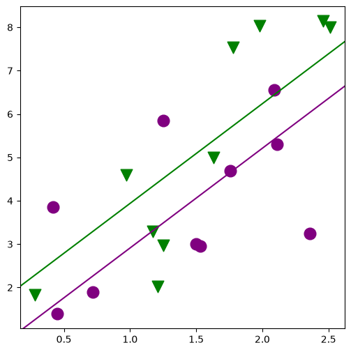
[28]:
min_lm4 = ols("JPERF ~ TEST * ETHN", data=jobtest_table).fit()
print(min_lm4.summary())
OLS Regression Results
==============================================================================
Dep. Variable: JPERF R-squared: 0.664
Model: OLS Adj. R-squared: 0.601
Method: Least Squares F-statistic: 10.55
Date: Tue, 30 Jun 2026 Prob (F-statistic): 0.000451
Time: 15:41:40 Log-Likelihood: -32.971
No. Observations: 20 AIC: 73.94
Df Residuals: 16 BIC: 77.92
Df Model: 3
Covariance Type: nonrobust
==============================================================================
coef std err t P>|t| [0.025 0.975]
------------------------------------------------------------------------------
Intercept 2.0103 1.050 1.914 0.074 -0.216 4.236
TEST 1.3134 0.670 1.959 0.068 -0.108 2.735
ETHN -1.9132 1.540 -1.242 0.232 -5.179 1.352
TEST:ETHN 1.9975 0.954 2.093 0.053 -0.026 4.021
==============================================================================
Omnibus: 3.377 Durbin-Watson: 3.015
Prob(Omnibus): 0.185 Jarque-Bera (JB): 1.330
Skew: 0.120 Prob(JB): 0.514
Kurtosis: 1.760 Cond. No. 13.8
==============================================================================
Notes:
[1] Standard Errors assume that the covariance matrix of the errors is correctly specified.
[29]:
fig, ax = plt.subplots(figsize=(8, 6))
for factor, group in factor_group:
factor_id = np.squeeze(factor)
ax.scatter(
group["TEST"],
group["JPERF"],
color=colors[factor_id],
marker=markers[factor_id],
s=12**2,
)
fig = abline_plot(
intercept=min_lm4.params["Intercept"],
slope=min_lm4.params["TEST"],
ax=ax,
color="purple",
)
fig = abline_plot(
intercept=min_lm4.params["Intercept"] + min_lm4.params["ETHN"],
slope=min_lm4.params["TEST"] + min_lm4.params["TEST:ETHN"],
ax=ax,
color="green",
)
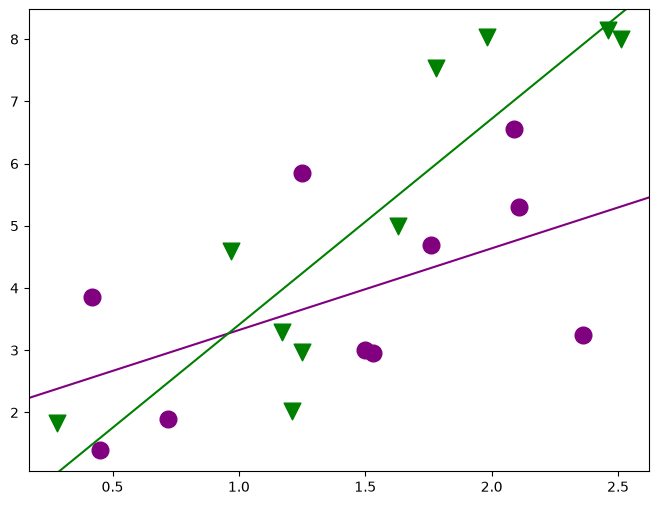
[30]:
# is there any effect of ETHN on slope or intercept?
table5 = anova_lm(min_lm, min_lm4)
print(table5)
df_resid ssr df_diff ss_diff F Pr(>F)
0 18.0 45.568297 0.0 NaN NaN NaN
1 16.0 31.655473 2.0 13.912824 3.516061 0.054236
[31]:
# is there any effect of ETHN on intercept
table6 = anova_lm(min_lm, min_lm3)
print(table6)
df_resid ssr df_diff ss_diff F Pr(>F)
0 18.0 45.568297 0.0 NaN NaN NaN
1 17.0 40.321546 1.0 5.246751 2.212087 0.155246
[32]:
# is there any effect of ETHN on slope
table7 = anova_lm(min_lm, min_lm2)
print(table7)
df_resid ssr df_diff ss_diff F Pr(>F)
0 18.0 45.568297 0.0 NaN NaN NaN
1 17.0 34.707653 1.0 10.860644 5.319603 0.033949
[33]:
# is it just the slope or both?
table8 = anova_lm(min_lm2, min_lm4)
print(table8)
df_resid ssr df_diff ss_diff F Pr(>F)
0 17.0 34.707653 0.0 NaN NaN NaN
1 16.0 31.655473 1.0 3.05218 1.542699 0.232115
One-way ANOVA#
[34]:
url = "https://raw.githubusercontent.com/statsmodels/smdatasets/main/data/anova/rehab/rehab.csv"
rehab_table = pd.read_csv(download_file(url))
fig, ax = plt.subplots(figsize=(8, 6))
fig = rehab_table.boxplot("Time", "Fitness", ax=ax, grid=False)
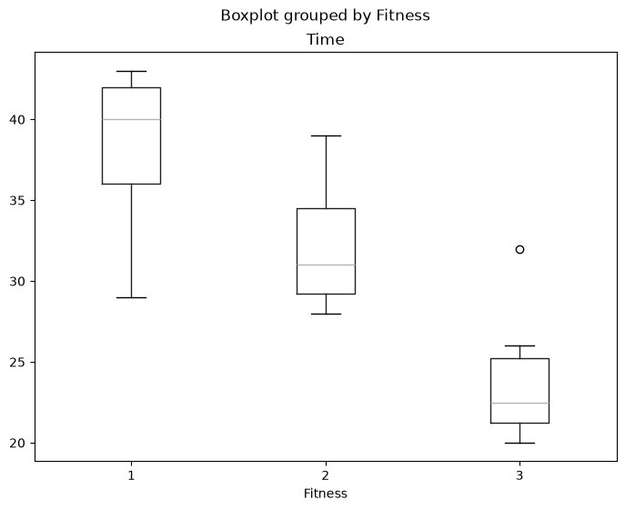
[35]:
rehab_lm = ols("Time ~ C(Fitness)", data=rehab_table).fit()
table9 = anova_lm(rehab_lm)
print(table9)
print(rehab_lm.model.data.orig_exog)
df sum_sq mean_sq F PR(>F)
C(Fitness) 2.0 672.0 336.000000 16.961538 0.000041
Residual 21.0 416.0 19.809524 NaN NaN
Intercept C(Fitness)[T.2] C(Fitness)[T.3]
0 1.0 0.0 0.0
1 1.0 0.0 0.0
2 1.0 0.0 0.0
3 1.0 0.0 0.0
4 1.0 0.0 0.0
5 1.0 0.0 0.0
6 1.0 0.0 0.0
7 1.0 0.0 0.0
8 1.0 1.0 0.0
9 1.0 1.0 0.0
10 1.0 1.0 0.0
11 1.0 1.0 0.0
12 1.0 1.0 0.0
13 1.0 1.0 0.0
14 1.0 1.0 0.0
15 1.0 1.0 0.0
16 1.0 1.0 0.0
17 1.0 1.0 0.0
18 1.0 0.0 1.0
19 1.0 0.0 1.0
20 1.0 0.0 1.0
21 1.0 0.0 1.0
22 1.0 0.0 1.0
23 1.0 0.0 1.0
[36]:
print(rehab_lm.summary())
OLS Regression Results
==============================================================================
Dep. Variable: Time R-squared: 0.618
Model: OLS Adj. R-squared: 0.581
Method: Least Squares F-statistic: 16.96
Date: Tue, 30 Jun 2026 Prob (F-statistic): 4.13e-05
Time: 15:41:41 Log-Likelihood: -68.286
No. Observations: 24 AIC: 142.6
Df Residuals: 21 BIC: 146.1
Df Model: 2
Covariance Type: nonrobust
===================================================================================
coef std err t P>|t| [0.025 0.975]
-----------------------------------------------------------------------------------
Intercept 38.0000 1.574 24.149 0.000 34.728 41.272
C(Fitness)[T.2] -6.0000 2.111 -2.842 0.010 -10.390 -1.610
C(Fitness)[T.3] -14.0000 2.404 -5.824 0.000 -18.999 -9.001
==============================================================================
Omnibus: 0.163 Durbin-Watson: 2.209
Prob(Omnibus): 0.922 Jarque-Bera (JB): 0.211
Skew: -0.163 Prob(JB): 0.900
Kurtosis: 2.675 Cond. No. 3.80
==============================================================================
Notes:
[1] Standard Errors assume that the covariance matrix of the errors is correctly specified.
Two-way ANOVA#
[37]:
url = "https://raw.githubusercontent.com/statsmodels/smdatasets/main/data/anova/kidney/kidney.table"
kidney_table = pd.read_csv(download_file(url), sep=r"\s+", engine="python")
Explore the dataset
[38]:
kidney_table.head(10)
[38]:
| Days | Duration | Weight | ID | |
|---|---|---|---|---|
| 0 | 0.0 | 1 | 1 | 1 |
| 1 | 2.0 | 1 | 1 | 2 |
| 2 | 1.0 | 1 | 1 | 3 |
| 3 | 3.0 | 1 | 1 | 4 |
| 4 | 0.0 | 1 | 1 | 5 |
| 5 | 2.0 | 1 | 1 | 6 |
| 6 | 0.0 | 1 | 1 | 7 |
| 7 | 5.0 | 1 | 1 | 8 |
| 8 | 6.0 | 1 | 1 | 9 |
| 9 | 8.0 | 1 | 1 | 10 |
Balanced panel
[39]:
kt = kidney_table
plt.figure(figsize=(8, 6))
fig = interaction_plot(
kt["Weight"],
kt["Duration"],
np.log(kt["Days"] + 1),
colors=["red", "blue"],
markers=["D", "^"],
ms=10,
ax=plt.gca(),
)
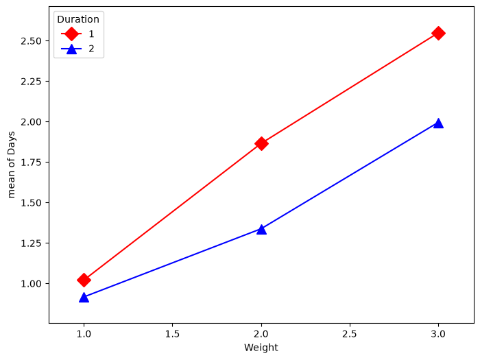
You have things available in the calling namespace available in the formula evaluation namespace
[40]:
kidney_lm = ols("np.log(Days+1) ~ C(Duration) * C(Weight)", data=kt).fit()
table10 = anova_lm(kidney_lm)
print(
anova_lm(ols("np.log(Days+1) ~ C(Duration) + C(Weight)", data=kt).fit(), kidney_lm)
)
print(
anova_lm(
ols("np.log(Days+1) ~ C(Duration)", data=kt).fit(),
ols("np.log(Days+1) ~ C(Duration) + C(Weight, Sum)", data=kt).fit(),
)
)
print(
anova_lm(
ols("np.log(Days+1) ~ C(Weight)", data=kt).fit(),
ols("np.log(Days+1) ~ C(Duration) + C(Weight, Sum)", data=kt).fit(),
)
)
df_resid ssr df_diff ss_diff F Pr(>F)
0 56.0 29.624856 0.0 NaN NaN NaN
1 54.0 28.989198 2.0 0.635658 0.59204 0.556748
df_resid ssr df_diff ss_diff F Pr(>F)
0 58.0 46.596147 0.0 NaN NaN NaN
1 56.0 29.624856 2.0 16.971291 16.040454 0.000003
df_resid ssr df_diff ss_diff F Pr(>F)
0 57.0 31.964549 0.0 NaN NaN NaN
1 56.0 29.624856 1.0 2.339693 4.422732 0.03997
Sum of squares#
Illustrates the use of different types of sums of squares (I,II,II) and how the Sum contrast can be used to produce the same output between the 3.
Types I and II are equivalent under a balanced design.
Do not use Type III with non-orthogonal contrast - ie., Treatment
[41]:
sum_lm = ols("np.log(Days+1) ~ C(Duration, Sum) * C(Weight, Sum)", data=kt).fit()
print(anova_lm(sum_lm))
print(anova_lm(sum_lm, typ=2))
print(anova_lm(sum_lm, typ=3))
df sum_sq mean_sq F PR(>F)
C(Duration, Sum) 1.0 2.339693 2.339693 4.358293 0.041562
C(Weight, Sum) 2.0 16.971291 8.485645 15.806745 0.000004
C(Duration, Sum):C(Weight, Sum) 2.0 0.635658 0.317829 0.592040 0.556748
Residual 54.0 28.989198 0.536837 NaN NaN
sum_sq df F PR(>F)
C(Duration, Sum) 2.339693 1.0 4.358293 0.041562
C(Weight, Sum) 16.971291 2.0 15.806745 0.000004
C(Duration, Sum):C(Weight, Sum) 0.635658 2.0 0.592040 0.556748
Residual 28.989198 54.0 NaN NaN
sum_sq df F PR(>F)
Intercept 156.301830 1.0 291.153237 2.077589e-23
C(Duration, Sum) 2.339693 1.0 4.358293 4.156170e-02
C(Weight, Sum) 16.971291 2.0 15.806745 3.944502e-06
C(Duration, Sum):C(Weight, Sum) 0.635658 2.0 0.592040 5.567479e-01
Residual 28.989198 54.0 NaN NaN
[42]:
nosum_lm = ols(
"np.log(Days+1) ~ C(Duration, Treatment) * C(Weight, Treatment)", data=kt
).fit()
print(anova_lm(nosum_lm))
print(anova_lm(nosum_lm, typ=2))
print(anova_lm(nosum_lm, typ=3))
df sum_sq mean_sq F PR(>F)
C(Duration, Treatment) 1.0 2.339693 2.339693 4.358293 0.041562
C(Weight, Treatment) 2.0 16.971291 8.485645 15.806745 0.000004
C(Duration, Treatment):C(Weight, Treatment) 2.0 0.635658 0.317829 0.592040 0.556748
Residual 54.0 28.989198 0.536837 NaN NaN
sum_sq df F PR(>F)
C(Duration, Treatment) 2.339693 1.0 4.358293 0.041562
C(Weight, Treatment) 16.971291 2.0 15.806745 0.000004
C(Duration, Treatment):C(Weight, Treatment) 0.635658 2.0 0.592040 0.556748
Residual 28.989198 54.0 NaN NaN
sum_sq df F PR(>F)
Intercept 10.427596 1.0 19.424139 0.000050
C(Duration, Treatment) 0.054293 1.0 0.101134 0.751699
C(Weight, Treatment) 11.703387 2.0 10.900317 0.000106
C(Duration, Treatment):C(Weight, Treatment) 0.635658 2.0 0.592040 0.556748
Residual 28.989198 54.0 NaN NaN